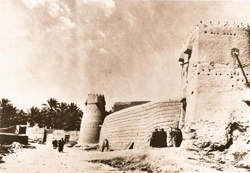
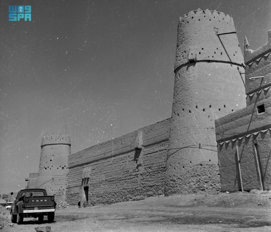
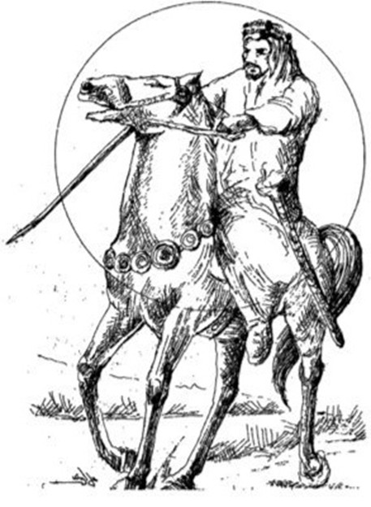
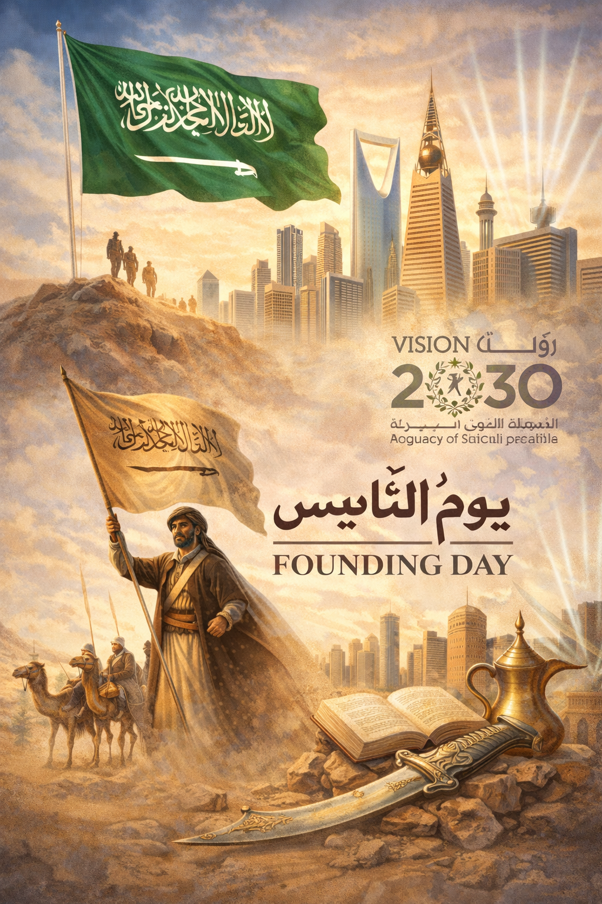

يوم التأسيس
للمملكة
العربية السعودية
المقدمة
يمثل يوم التأسيس محطة مفصلية في تاريخ المملكة العربية السعودية...
فهو اليوم الذي انطلقت فيه الدولة السعودية الأولى بقيادة الإمام محمد بن سعود عام 1727م في الدرعية، لتبدأ مسيرة كيان سياسي راسخ قائم على الاستقرار، والعدل، ووحدة الصف.
ولا يُعد يوم التأسيس مجرد ذكرى تاريخية، بل هو استحضار لجذور دولةٍ امتدت عبر ثلاثة قرون، واجهت التحديات، وتجاوزت المنعطفات، حتى أصبحت اليوم نموذجًا في البناء والتنمية والاستقرار.

نشأة الدولة السعودية الأولى (1727 – 1818م)
في عام 1727م تولّى الإمام محمد بن سعود إمارة الدرعية، فأسس نواة الدولة السعودية الأولى. تميزت هذه المرحلة بـ:
- 1. الاستقرار السياسي: توحيد مناطق واسعة تحت راية واحدة.
- 2. المرجعية الشرعية: تطبيق الشريعة الإسلامية كأساس للحكم.
- 3. الأمن الداخلي: إنهاء النزاعات القبلية وبناء مجتمع منظم.
- 4. الازدهار الاقتصادي: ازدهار التجارة في نجد والمناطق المجاورة.
وانتهت الدولة الأولى عام 1818م بعد حملة عسكرية عثمانية، لكنها تركت إرثًا سياسيًا واجتماعيًا راسخًا.

الدولة السعودية الثانية (1824 – 1891م)
بعد سقوط الدرعية، أعاد الإمام تركي بن عبدالله بن محمد آل سعود تأسيس الدولة في الرياض عام 1824م. أبرز سمات هذه المرحلة:
- استعادة الوحدة السياسية في نجد.
- إعادة بناء مؤسسات الحكم.
- ترسيخ مفهوم الاستقلال الوطني.
ورغم ما واجهته من صراعات داخلية، فقد حفظت استمرارية الكيان السياسي السعودي.

الدولة السعودية الثالثة وتوحيد المملكة
في عام 1902م استعاد الملك عبدالعزيز آل سعود مدينة الرياض، لتبدأ مرحلة التوحيد الكبرى. وبعد ثلاثين عامًا من الجهاد السياسي والعسكري، أُعلن توحيد البلاد باسم المملكة العربية السعودية عام 1932م.
تميزت هذه المرحلة بـ:
الهوية الوطنية والعمق الحضاري
يُجسد يوم التأسيس أبعادًا حضارية تتجاوز الحدث التاريخي، ومن أبرزها:
الوحدة
تلاحم القيادة والشعب عبر التاريخ.
الاستمرارية
ثلاثة قرون من الحكم المتصل والكيان الراسخ.
الثقافة والتراث
الأزياء، القيم، العادات، والهوية البصرية الفريدة.
الاعتزاز بالجذور
الاعتراف بتاريخ يمتد إلى عمق الجزيرة العربية.
كما يعزز يوم التأسيس مستهدفات رؤية السعودية 2030 في ترسيخ الهوية الوطنية والاعتزاز بالإرث الحضاري.
يوم التأسيس في الحاضر
صدر الأمر الملكي باعتماد يوم 22 فبراير مناسبة وطنية رسمية في عهد خادم الحرمين الشريفين الملك سلمان بن عبدالعزيز آل سعود عام 2022م.
وتشمل مظاهر الاحتفال:

الخاتمة
إن يوم التأسيس ليس احتفاءً بماضٍ مضى، بل هو تأكيد على جذورٍ ضاربة في التاريخ، وعلى مسيرة دولةٍ قامت على الوحدة والعدل والاستقرار. ثلاثة قرون من البناء السياسي والاجتماعي صنعت وطنًا قويًا، يقف اليوم بثقة نحو المستقبل.
ففي 22 فبراير نستحضر البدايات الأولى، ونجدّد العهد على مواصلة المسيرة، تحت راية التوحيد، وقيادة حكيمة، وشعبٍ وفيّ لوطنه وتاريخه.

انتهى كتاب يوم التأسيس